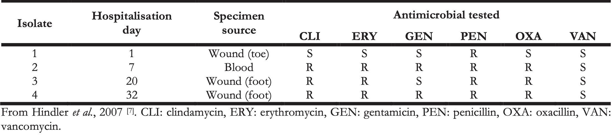
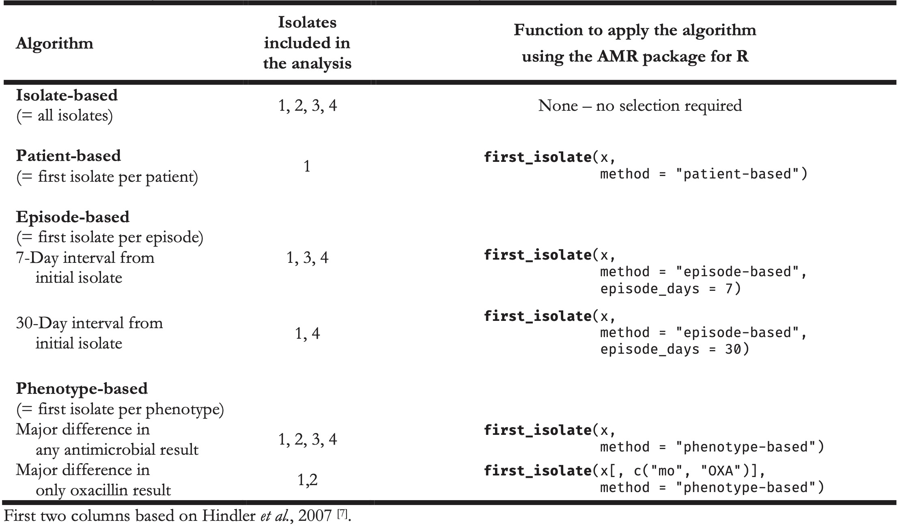

11 Summary and Future Perspectives
Section I
Where did microbial epidemiology start? How did it originate? And how does it add to the holistic approach of infection management? These questions are answered in this first section. It is subsequently outlined which important current limitations exist when applying microbial epidemiology in practice and how they could be overcome.
The general introduction of this thesis outlines in chapter 1 that microbial epidemiology is a part of infectious disease epidemiology, which in turn is a part of clinical microbiology. Microbial epidemiology can be seen, among other things, as the scientific field for acquiring new insights about spreading microorganisms and their respective antimicrobial resistance (AMR) patterns. The advancements in information technology have brought us not only the possibilities to look beyond regional, national, and international borders to get an understanding of the spread of microorganisms and AMR, but even to observe, analyse and understand pandemics in real-time. Methods we develop and use today can be implemented on the other side of the world tomorrow. This is an important advantage in modern microbial epidemiology, which focus is increasingly becoming more data-driven.
To expedite this focus, data are the primary requirement. The data used as input for microbial epidemiological analyses are often obtained from laboratory information systems (LIS). These data consist of routine diagnostic results from laboratory tests. Chapter 2 brings an opinionated view that diagnostics might lead to raw results, but not to a direct answer to the clinical question that a physician treating a patient might have. Providing physicians with answers requires the approach of a multidisciplinary, intertwined stewardship concept with a focus on diagnostics [1,2]. This demands medical specialists in general and microbiologists, in particular, to closely interact for optimal quality of care and patient safety in successful infection management: diagnostic stewardship (DSP). The concept of stewardships, in general, has been widely used to facilitate communication and clinical decision-making, while it proved challenging to establish a clear definition of ‘stewardship’ [3,4]. Moreover, diagnostics in clinical microbiology laboratories are currently advancing fast with regards to improved workflows and new technologies, such as matrix-assisted laser desorption/ionisation time-of-flight (MALDI-TOF) mass spectrometry [5,6]. Yet, diagnostics in infection management is broader than this and covers many clinical areas where communication and interaction are fundamental to make the best use of knowledge and expertise, leading to all specialisms contributing to patient care. The right test at the right time for the right patient to answer the right questions and start the right treatment – this is what DSP in clinical microbiology is about. Microbial epidemiology can be utilised for a small aspect of this diagnostic entirety, by recycling the test results and subsequently bringing enrichments to the answer-generating process that DSP embodies.
This is where chapter 3 continues, by highlighting important current limitations when applying microbial epidemiology, in particular AMR data analysis. Specifically, AMR data analysis has to be conducted in a clinically and epidemiologically sensible way [7], but is challenging since it requires expertise in (clinical) epidemiology and (clinical) microbiology, and tools to handle the AMR data analysis itself. This is further hindered by the common lack of accessibility of data stored in LIS-es, as most LIS-es are not designed with a focus on epidemiology. As an example, every LIS keeps its own taxonomic data and laboratories are responsible for their regular update. Given that AMR guidelines are strongly based on the microbial taxonomy (some rules only apply to a specific genus, other rules apply to a specific family), this information must be correct and up to date [8–10]. Unfortunately, from studying seven clinical microbiology laboratories in the Netherlands, it became apparent that all their LIS-es contained severely outdated taxonomic names. This can impact both routine result reporting and (future) epidemiological analyses. For these reasons, the AMR package for R was introduced in this chapter as a new epidemiological instrument for AMR data analysis that is free, independent, open-source, and publicly available. Developed with a team from twelve different public health organisations in seven different countries, it provides tools to simplify AMR data cleaning, transformation and analysis, as well as methods to easily incorporate (inter)national guidelines, and scientifically reliable reference data. As of May 2021, it has been downloaded at least 50,000 times from 162 different countries since its first release in 2018 [11]. The results of a survey among users presented in this chapter showed that its use leads to more reproducibility of analysis results, more reliable outcomes of AMR data analyses, and new or improved insights in AMR for the users’ institutions and regions. Users also stated that the AMR package was used to support clinical decision-making. The package solves the inconvenience of being dependent on (inter)national guidelines and reliable (reference) data, while also providing a comprehensive toolbox for the analysis itself. The AMR package for R can therefore empower any specialist in the field working with AMR data.
Section II
Following the challenges outlined in the previous section, this section introduces the AMR package for R as a new instrument to cope with these challenges. From multiple viewpoints, the AMR package and its advantages are put into perspective: from a technical viewpoint, from an infection management viewpoint and from a clinical viewpoint. These combined provide a common ground for understanding the explications that the AMR package can yield in the field and how it can set a new empowered starting point for future applications of microbial epidemiology.
The technical functionalities of the AMR package for R have been described in chapter 4, where it is described how the AMR package has been developed to standardise clean and reproducible AMR data analyses using international standardised recommendations [9,12]. To facilitate this, scientifically reliable reference data are incorporated regarding valid laboratory results (as opposed to e.g., non-existing MIC values), antimicrobial agents, and the complete biological taxonomy of microorganisms. Source data should be analysed in the most reliable way, especially when for example the outcome will be used to evaluate patient treatment options. This requires reproducible and field-specific, specialised data cleaning and transforming. The AMR package provides a standardised and automated way of cleaning, transforming, and enhancing common LIS data, independent of the underlying data source and data accuracy. For this reason, general algorithms were developed to clean AMR test results and to validate the names of microorganisms and antimicrobial agents. The equation for taxonomic name validation takes into account the human pathogenic prevalence of microorganisms and is context-aware about other taxonomic properties such as the kingdom, phylum, order and family. To exemplify, a data value “E. coli” will be translated to the bacterium Escherichia coli, while informing the user that the parasite Entamoeba coli is also eligible but has a lower likelihood. Using convenient functions, users can quickly retrieve consistent microbial properties, such as the taxonomic kingdom, phylum, class, order, family, genus, species, subspecies, previously accepted names and even the Gram stain. Aside from information about microorganisms, the package also includes reference data about antibiotics, which comprises common laboratory information system codes, official names, ATC (Anatomical Therapeutic Chemical) codes, ATC group names, defined daily doses (DDD) and more than 5,000 trade names of 456 antimicrobial agents. Using these reference data, users can translate raw data and retrieve properties about any microorganism or antimicrobial drug. Furthermore, the AMR package is capable of determining multi-drug resistant organisms (MDROs) based on national and international guidelines, interpreting raw minimum inhibitory concentrations (MICs) and can determine first isolates to be used for calculating AMR of both monotherapy and combination therapies. The AMR package itself was meant as a comprehensive instrument for data-technical staff working in the field of AMR, although its use is not limited to this group.
To exemplify this, chapter 5 shows that the AMR package was used as a backbone in an interactive open-source software app for infection management and antimicrobial stewardship, called RadaR (rapid analysis of diagnostic and antimicrobial patterns in R). Infection management in the form of antimicrobial stewardship (AMS) programs has emerged as an effective solution to address this global health problem in hospitals [3]. Connecting to chapter 2, stewardship interventions and activities focus on individual patients (personalised medicine and consulting) as well as patient groups or clinical syndromes (guidelines, protocols, information technology infrastructure, and clinical decision support systems) while prioritising improvement in quality of care and patient safety for any intervention [13,14]. However, easy access to analyse patient groups (e.g., stratified by departments or wards, specific antimicrobials, or diagnostic procedures used) is difficult to implement in daily practice. It is even more challenging to rapidly analyse larger patient populations (e.g., spread over multiple specialities) even though this information might be available in the data. Therefore, the development of RadaR was intended to serve AMS teams with a user-friendly and time-saving data analysis resource, without the need for profound technical expertise. RadaR was developed for graphical exploratory (AMR) data analysis. Among others, it provides Kaplan-Meier curves about lengths of hospitals stays, time trends for the number of admissions, antimicrobial consumption, and an automated AMR data analysis for which the AMR package for R was used. RadaR was validated by 12 ESGAP members (European Society of Clinical Microbiology and Infectious Diseases Study Group for Antimicrobial Stewardship) from 9 different countries. It has the potential to be a highly useful tool for infection management and AMS teams in daily practice. Additionally, this chapter shows that the AMR package can be used as part of another software solution to empower integrated infection management.
Following this insight, Chapter 6 demonstrates the effectiveness of the AMR package among users, by evaluating its usability and impact on clinicians’ workflows in a typical hospital scenario. Although the use of the AMR package in research has been demonstrated in multiple studies from different countries already [15–18], the impact on workflows for AMR data analysis and reporting in clinical settings was still pending. AMR data analysis and reporting, unfortunately, require specifically skilled personnel. Moreover, thorough and in-depth analyses can be time-consuming and sufficient resources need to be allocated for consistent and repeated reporting. To determine the impact of these facts in a clinical setting, common questions about blood culture data were formulated that had to be answered by routine clinical personnel, including clinical microbiologists, paediatricians and intensivists. In total, ten clinicians participated in the study. Additionally, participants were asked to fill in an online questionnaire capturing their backgrounds, demographics, software experience, and experience in AMR data analysis and reporting. All participants had to answer the study questions twice: the first time with their software of choice (round 1) and the second time using a newly developed web application built around the AMR package for R (round 2). The development of this web application was utilised in a highly efficient and agile workflow. The answers to the list of questions served as the basis to compare the effectiveness (solvability of each task for every user) and efficiency (time spent solving each task) between the two rounds. Not all participants were able to complete the tasks within the given time frame. Average task completion between the first and second round increased from 56% (SD: 23%) to 96% (SD: 6%). The proportion of correct answers between the first and second round increased from 38% to 98%. The mean time spent per round was reduced from 94 minutes (SD: 22 minutes) to 22 minutes (SD: 14 minutes). This chapter demonstrates the increased effectiveness, efficiency, and accuracy of using the AMR package for R for AMR data analysis compared to traditional software applications such as Microsoft Excel and SPSS.
Section III
Many clinical studies in the field of infectious diseases and microbiology rely on some form of (microbial) epidemiology. While the AMR package was presented in the previous section and its use in different settings was showcased, this section starts with an epidemiological research projects in the Northern Dutch region, and then extends to the Dutch-German cross-border region to better understand the occurrence and AMR patterns of pathogens on a (eu)regional level. Focusing on the regions on each side of a national border allows comparisons between two different nations on the micro level. And different nations ultimately mean different healthcare systems. What is left of ‘One Health?’ What are the implications on comparison of having differences between countries in AMR test methodologies, MDRO interpretations and screening policies? This section provides answers to these questions.
Chapter 7 zooms in on coagulase-negative staphylococci (CoNS), which are known to cause bloodstream infection (BSI) and a high mortality rate, although for years they had often been regarded as contamination [19–23]. Moreover, CoNS have become increasingly associated with nosocomial infections [24]. At present, the CoNS group consists of 45 different species, although determining the species level has only recently been made possible for routine diagnostic laboratories [25–27]. Since 2012, MALDI-TOF mass spectrometry has become the standard for the identification of bacterial species such as CoNS. Before that, identification of CoNS was primarily done with biochemical and physiological tests, which yielded generally variable results, in particular in less prevalent species [27]. AMR, and especially multi-drug resistance, is also an increasing problem in CoNS [28]. Nonetheless, treatment guidelines and national surveillance programs (such as the Dutch NethMap) still gather CoNS as a whole group, lacking differentiation between species [29]. Consequently, little is known about trends in occurrence and AMR in CoNS on the local and regional level. Therefore, this retrospective study shows an in-depth AMR analysis of 19,803 CoNS isolates found in all available 71,632 blood culture isolates between 2013 and 2019 in the Northern Netherlands that were determined by MALDI-TOF MS. This study followed a full-region approach by covering the whole Northern Netherlands. Through this analysis, we aimed to evaluate the differences in the occurrence of CoNS species and their AMR patterns and to assess their clinical microbiological relevance to this end. A total of 27 different species of the CoNS group were found. Major differences were observed in the occurrence of the different species: the top five species covered 97.1% of all included isolates. These were: S. epidermidis (48.4%), S. hominis (33.6%), S. capitis (9.3%), S. haemolyticus (4.1%) and S. warneri (1.7%), meaning that the remaining 2.9% of isolates consisted of 22 different CoNS species. The proportion of CoNS in intensive care units (ICUs) compared to other departments was also found to be significantly different between secondary care (17.5% of isolates from ICU) and tertiary care (24.4%% of isolates from ICU). As it was unknown which patients had BSI, ‘CoNS persistence’ was defined as a surrogate having at least three positive blood cultures drawn on three different days within 60 days, containing the same CoNS species, within the same patient. The relatively most common causal agent of CoNS persistence was S. haemolyticus (5.8% of all patients with S. haemolyticus), followed by S. epidermidis (3.7%,) and S. lugdunensis (3.4%). AMR analysis has shown substantial differences between CoNS species and was presented thoroughly per antibiotic class in tables and text. For example, S. epidermidis and S. haemolyticus showed 50% to 80% resistance to teicoplanin, erythromycin, ciprofloxacin, and oxacillin, while resistance to these agents remained lower than 10% in most other CoNS species. Yet, these differences are neglected on the national level such as in NethMap, which might cause the development of treatment guidelines to focus on ‘AMR-safe’ agents for treating CoNS, such as vancomycin or linezolid. Nonetheless, agents such as tetracycline, co-trimoxazole, and erythromycin could be considered viable options for some species, where according to the study results, AMR never surpassed 10%. In conclusion, a multi-year full-region approach to extensively assess the trends in both the occurrence and AMR of CoNS species was carried out, which could be used for evaluating treatment policies and understanding more about these important but still too often neglected pathogens. Furthermore, this study served as a practical research example of how the AMR package for R can be used to gain new AMR insights using epidemiologically sounds methods.
Following new insights by studying AMR test results in the Northern Netherlands, chapter 8 provides a comparison of AMR test results and their national interpretations of MDROs in the Dutch-German cross-border region, especially concerning the practical impact on cross-border healthcare workers. Comparing AMR in general, not only MDROs, in this cross-border region is particularly interesting since both countries are characterised by highly developed but structurally different healthcare systems. AMR interpretations in patient records are transferred between healthcare facilities located in these two different countries, while the underlying definitions differ. This causes the need for clinicians and infection control personnel to understand AMR results from both sides of the border and to be able to comprehend both national MDRO interpretation guidelines. By comparing antibiograms of Gram-negative bacteria from both sides of the border, the degree of impact of these challenges was sought to determine. To this end, 35,619 antibiograms from six Dutch and four German hospitals were analysed between 2015 and 2016 of all species of Enterobacteriaceae, and P. aeruginosa, the A. baumannii complex and Stenotrophomonas maltophilia. MDRO recommendations and special hygiene precautions exist in this region for all of these species. On the Dutch side of the border, isolate selection was carried out using the AMR package. From the Dutch hospitals, 12,616 antibiograms were selected using the AMR package for R applying the Dutch MDRO interpretation guideline. Of note, other national and international guidelines, such as the German MDRO interpretation guideline, are also included in the AMR package for R. From German hospitals, 23,003 antibiograms were selected using other methods. According to the Dutch guideline, 24.5% of all isolates were an MDRO. According to the German guideline, 12.9% of all isolates were an MDRO. However, of all isolates, 73.7% were not classified as an MDRO according to either guideline. Among all carbapenem-resistant Enterobacteriaceae isolates, carbapenemases were detected in 27.6% with OXA-48-like genes being predominant. The remaining isolates were negative for carbapenemases (79.1%) or not tested (20.9%). When patients are transferred between hospitals, information regarding MDRO colonisation or infection must also be transferred to ensure continuous implementation of infection control measures. For cross-border healthcare, this implies that clinicians or infection control staff should be able to determine MDROs based on antibiograms according to guidelines from either of the two countries. For cross-border healthcare, the easiest solution would be to harmonise the classification rules of both countries. This would likewise solve the understandable confusion patients might experience if infection control measures are imposed in one country, but relieved after transfer to another country. As long as the harmonisation is not done, the full AMR data of Gram-negative bacteria should be transferred together with the patient to enable classification by local infection control staff.
Other AMR-related cross-border challenges and differences are illustrated in chapter 9, which comprises a comprehensive microbial epidemiological analysis of MRSA occurrence, policies, and healthcare effects in the Dutch-German border region. MRSA is still one of the major causes of healthcare-associated infections due to AMR pathogens [30]. In this study, MRSA surveillance data of five years (2012-2016) from Dutch and German cross-border region hospitals were analysed to describe temporal and spatial trends of MRSA rates and find differences between these groups of hospitals. The research setting comprised 42 hospitals located in the Dutch-German cross-border region treating approximately 620,000 admitted patients (68.0% in the German part of the study region) with 3.9 million patient days per year. All hospitals had implemented MRSA-related infection prevention control measures according to their national guidelines and recommendations, and the guideline differences between the two countries were compared. On both sides of the border, the median nasopharyngeal MRSA screening rate increased significantly between 2012 and 2016, although the median MRSA incidence remained stable over time at both sides of the border. Overall, the median screening rate was 14 times higher in the German border region (DE-BR) than in the Dutch border region (NL-BR). The median percentage of MRSA in S. aureus blood culture isolates decreased from 12.5% in 2012 to 5.0% in 2016 in DE-BR, while it remained stable at 0% to 1.9% in NL-BR. Nonetheless, MRSA among S. aureus isolates was 34 times higher in DE-BR. The in-hospital length of stay of MRSA patients was similar in both regions, while the general length of stay differed significantly. Furthermore, the number of nasopharyngeal MRSA screening swabs before or at admission to hospital per 100 inhabitants was 12.2 in DE-BR and 0.36 in NL-BR, also 34 times higher in DE-BR. The number of inpatient MRSA cases per 1,000 inhabitants was 2.52 in DE-BR and 0.14 in NL-BR. Thus, this study revealed significant differences between Dutch and German hospitals. The median MRSA incidence in DE-BR hospitals was more than seven times higher than in NL-BR hospitals. According to the European Centre of Disease Prevention and Control (ECDC), differences in the occurrence of AMR pathogens between European countries are most likely caused by differences in healthcare utilisation, antimicrobial use and infection prevention control practices [31]. Concerning healthcare utilisation in our context, we found that inhabitants in the German part of the study region were almost three times as often hospitalised and had a significantly longer length of stay than patients on the Dutch part. This may be due to socioeconomic factors or a different organisation of ambulatory healthcare. This comprehensive study on MRSA covering hospitals across a European border demonstrated that routine MRSA surveillance may be helpful to monitor trends of MRSA parameters, to enable (inter)national comparisons.
The discussion of this study concluded with “cross-border surveillance should be extended to other multidrug-resistant organisms,” which is where chapter 10 continues. Given that not only MRSA but MDROs, in general, pose a risk for healthcare, both in the community and hospitals, the study aimed to determine the prevalence of multiple MDROs in this cross-border region to understand differences and improve infection prevention based on real-time routine data and workflows. To this end, 23 hospitals in the Dutch-German cross-border region (NL-BR and DE-BR) participated between 2017 and 2018 in this prospective study by screening all patients upon admission to intensive care units (ICUs). All hospitals (8 in NL-BR, 15 in DE-BR) enrolled for eight consecutive weeks and screened patients for nasal carriage of MRSA and rectal carriage of vancomycin-resistant Enterococcus faecium/E. faecalis (VRE), third-generation cephalosporin-resistant Enterobacteriaceae (3GCRE) and carbapenem-resistant Enterobacteriaceae (CRE). A total of 3,365 patients were screened: 35.7% on NL-BR ICUs and 64.3% on DE-BR ICUs. The median age of all screened patients was 68 years (IQR: 57-77), while patients in DE-BR were significantly older than patients in the NL-BR. A total of 6,462 swabs were processed. The overall screening compliance (screened for at least one MDRO group) was 60.4%, in NL-BR 56.9% and in DE-BR 62.9%. All AMR data analyses were carried out and automated using the AMR package for R. The prevalence of MRSA was 1.7% in DE-BR ICUs and 0.6% in NL-BR ICUs. The prevalence of VRE was 2.7% in DE-BR ICUs and 0.1% in NL-BR ICUs. Notably, this prevalence ranged from 0% to 4.1% in DE-BR. All 56 cases of VRE were caused by E. faecium. The prevalence of 3GCRE was 6.6% in DE-BR ICUs and 3.6% in NL-BR ICUs, whereas the prevalence for CRE was practically non-existent on both sides of the border. The prevalence for Gram-negative MDROs differed within both countries between hospitals, ranging from 0% to 5.0% in NL-BR and from 1.2% to 10.9% in DE-BR ICUs. For NL-BR ICUs, the prevalence of all MDRO groups was not significantly different between the non-university and the university hospital. For the DE-BR ICUs however, the prevalence of Gram-negative MDROs was significantly higher in the non-university hospitals. In the NL-BR, 4.8 per 100 hospital admissions led to ICU admission. In contrast, in the DE-BR this was 7.7 per 100 hospital admissions. This difference can be explained by the higher ICU capacity in DE-BR hospitals (4.8% of all hospital beds) compared to NL-BR hospitals (2.4% of all hospital beds). The overall carriage prevalence for the different MDROs was higher in the DE-BR ICUs, although some differences were marginal. Specifically, the prevalence of MRSA carriage was three times higher in the DE-BR (1.7%) than in the NL-BR (0.6%). These prevalences are consistent with the study mentioned in chapter 9. The difference in MDRO prevalence between NL-BR and DE-BR was observed for all MDROs groups. Yet, the study findings were not all comparable with (inter)national averages. For example, the 3GCRE carriage prevalence in the DE-BR was almost twice as high (6.6%) as in the NL-BR (3.6%), but both were still lower than national averages. The ECDC reported 3GCRE proportions among blood culture isolates of E. coli and K. pneumoniae as 12.2% to 12.9% for Germany and 7.3% to 11.1% for the Netherlands. This highlights that there are important differences to be found when studying carriage in specified populations versus looking at the proportion of (probably) invasive isolates. Thus, this study highlights the importance of a regional and cross-border approach in any European cross-border region, to illustrate the difference in AMR prevalence between the regions and to highlight potential differences with country-wide reports. Attaining a deeper level of detail is required to be able to elaborate on this further, for example by collecting information about staff on the wards and infection control staff, MDRO outbreaks, infections, antibiotic use and risk factors of patients. In conclusion, geographical and political borders do not seem to be “respected” by MDROs, although healthcare systems, geographic nature and guidelines are very different between countries. Proportions of MDROs of certain pathogens, as reported on the national and international level, do not reflect MDRO prevalence in the patient or general population. This should be taken into serious consideration when interpreting reports on the country or even continental level.
Future perspectives
After hearing for several decades that computers will soon be able to assist with difficult diagnoses, the practising physician may well wonder why the revolution has not occurred. Scepticism at this point is understandable. Few, if any, programs currently have active roles as consultants to physicians. The story behind these unfulfilled expectations is instructive and, we believe, offers hope for the future.
These words are from Schwartz et al. and, unfortunately, not very recent. It was published 34 years ago in The New England Journal of Medicine in 1987 [36]. Many might find it quite disappointing that this exact quote can still apply to current times. Yet, this is not due to a lack of technological advancements – computational power and software capabilities have increased significantly over the last decades. And with them, the enablement of making optimal use of existing data to aid clinical decision-making and to support medicine as a whole. Hence, if it is not due to lack of technological advancements, what is then inhibiting the use of these advancements for clinical use? Others pointed out that the answer might be the gap in culture between the clinicians, biomedical scientists, and those skilled in computer programming [37,38]. To this end, one might contemplate whether multi-disciplinarity was imbedded well enough into our integral medical field, since the differences are not only cultural. While both clinicians and biomedical scientists endure more than a decade of specialised training and education in a similar field, they often (1) do not speak each other’s language, (2) lack a common value system, even regarding knowledge and ignorance, and (3) have different sources of passion and emotional intensity [37]. Scientists have to focus on asking “why?” and “how?” whereas clinicians have to focus on acquiring practical answers to “how?” and “what?” From a clinician’s perspective, asking “why?” distracts from the sense of mastery that comes from accumulating information and applying it in a clinical setting. Neither perspectives are wrong, they are just inherently different, and this results in a cultural gap. Unfortunately, this cultural gap hinders the translation of scientific discoveries into medical advances and may even hinder scientific progress [37].
While this gap may be existent, this thesis aims to narrow this gap for clinicians and scientists working in the fields of clinical microbiology and microbial epidemiology, by providing an instrument that can be beneficial and usable for clinicians and scientists alike. Ultimately, it could yield more collaboration, communication, and efficacy between scientists and clinicians. The AMR package for R has empowered the four studies mentioned in SECTION III, which were conducted in the Northern Netherlands as well as in the Dutch-German cross-border region. In these studies, the AMR package affected the selection of isolates, determination of MDROs, or the entire AMR data analysis. Combined with the user survey results in chapter 3 (that also included the use of the AMR package by both clinicians and scientists), the proof of concept of an integrated design in chapter 5, and the positive effects on clinical staff working with AMR data in chapter 6, this indicates that this new instrument can be deployed and used in a multi-disciplinarily fashion. Many others have pointed out the challenges in AMR data analysis on (cumulative) antibiograms and, inter alia, the necessity for correcting duplicate isolates [7,18,39–45]. Still, all these are theoretical and did not provide a pragmatic solution for those conducting microbial epidemiology. Hindler et al. presented a practical example of a data set that might require a correction for duplicate isolates (Table 1) [7]. The algorithm of choice could be isolate-based, patient-based, episode-based, or phenotype-based. This choice is dependent on the type of analysis and desired outcome. Table 2 illustrates the scope of the isolates that should be included based on a chosen algorithm and, more importantly, shows how the AMR package for R can be used to accomplish this in one simple command, underlining its approachability. Some of those functions to apply the respective algorithm using the AMR package for R have been used by others [15–18].
Table 1. Example AMR test results of four Staphylococcus aureus isolates from a single patient.

Table 2. Algorithms for including isolates and the accompanying function in the AMR package for R for use in the AMR data analysis. The ‘x’ in the last column denotes any data set in a similar structure as Table 1.

User feedback as presented in chapter 3 implies that usage of the AMR package has led to higher reproducibility, higher reliability, new AMR insights and improved clinical decision-making. From chapter 5 until chapter 10, it is shown that the AMR package can be a sensible and reliable tool for microbial isolate selection and conducting AMR data analysis. These examples indicate that the AMR package for R has the potential to become a centrepiece in AMR data analyses, which is further supported by its use in other scientific publications [15–18]. One of its most important features – enabling users to transform raw data into valuable new insights – allows data sets from any clinical source to be used. For example, data sets from different regions could be analysed every year in the same manner by reusing an automated AMR script, comparing trends in the occurrence of MDROs. This uniformity is an important advantage for gaining new AMR insights on the local, regional or national level and should be exploited to the fullest.
From an international point of view, it could be viable to achieve a common workflow with AMR interpretation guideline suppliers such as the Clinical and Laboratory Standards Institute (CLSI) and the European Committee on Antimicrobial Susceptibility Testing (EUCAST) [8,10]. These organisations provide clinical microbiology laboratories around the globe with static and manually formatted Microsoft Excel and Portable Document Format (PDF) files, requiring laboratory staff to manually apply guideline updated into their LIS. Since the AMR package for R contains machine-readable files of these (often yearly) guidelines, a collaborative workflow could lead to a more seamless implementation and update process in clinical laboratories worldwide, increasing reliability and reducing the workload on laboratory staff. These possible effects have yet to be studied.
Similarly, LIS manufacturers could benefit from the freely available comprehensive reference data about antimicrobial agents and the taxonomy of microorganisms that the AMR package provides. The data provided in the AMR package are automatically updated using services from the World Health Organization Collaborating Centre for Drug Statistics Methodology, PubChem, the Catalogue of Life, the List of Prokaryotic names with Standing in Nomenclature and SNOMED CT. LIS manufacturers could provide this same automated process or the data in the AMR package directly to their end-users (the clinical microbiology laboratories), to ensure a continuously up to date version of the reference data about antimicrobial agents and the taxonomy of microorganisms. This would mean that laboratories could be unburdened by losing the necessity of keeping their local data up to date. Maintaining these local data is of paramount importance, as all AMR interpretation guidelines are based on these data. It would strongly optimise the quality of the output of clinical routine laboratories. Aside from this optimisation, with less manual and tedious work to conduct microbial epidemiology for data-technical staff, using this presented new instrument hopefully also leads to faster availability of higher-quality research in the field of AMR, as well as a better patient outcome in clinical settings.
A more clinical example of the possibilities of the AMR package is to analyse microbiological data from urinary tract infections in comparison with blood culture data. Some patients suffer from a urinary tract infection but are admitted to the hospital with urosepsis sometime after. As these are the kind of clinical complications we should thrive to prevent, a full-region analysis of these data might shed light on the reasons why these clinical complications were not or could not be prevented. Fortunately, it is not difficult anymore to select patients who had a laboratory-confirmed urinary tract infection in primary care and a positive blood culture with the same pathogen in the weeks after. The AMR package can be used to do so, and to calculate suggestions for more specific and probably effective antibiotic treatment. This puzzle may not be easily solved, but it is at least now possible to get the data into the right format and have them generate the answers to back our hypotheses. Research initiatives to study this clinical example have recently commenced in both our Northern Dutch region and in the Dutch-German cross-border region.
Yet, the AMR package could be used for even more sophisticated outcomes by combining microbial epidemiology with computational intelligence, and this is where the real potential lies. For example, empirical sepsis therapy could become more personalised or, as others call it, become precision medicine by performing in-depth analyses of blood cultures isolates [46]. Blood cultures are namely the most reliable diagnostic measure for analysing microbes and their AMR, even if they are drawn from e.g. arterial catheters [47–49]. Combining AMR test results from blood culture isolates with patient demographics and hospital-specific traits might enable a comprehensive and multi-angle view on the patient’s disease. To specify, by stratifying patient demographics (such as age, gender, comorbidities, history of antibiotic consumption) and comparing them with hospital-specific traits (such as geographic location, common microbial findings, infection control measures, allowed number of patients per room), AMR data analysis could show major differences between all these patient stratifications. The subsequent results could be used to calculate the likelihood of finding similar pathogens and AMR in similar cases, leading to predictive modelling for upcoming septic patients. For example, a septic 60-year-old male patient with a long antibiotic consumption history due to chronic obstructive pulmonary disease (COPD) might require different empiric antiseptic treatment than a septic 60-year-old male patient without COPD and no antibiotic consumption history. In other words, this modelling could lead to personalised empiric treatment guidelines, increasing the chance of therapeutic success. For a study to investigate this, the AMR package for R could be used to identify eligible patients, compare the antibiotic consumption histories, and calculate the AMR rates for pre-defined groups. The AMR package can also calculate the empiric chance of success of different monotherapies and combination therapies using different algorithms. The output of the models will most probably be different between regions and could perhaps even differ per hospital, although the model itself could be universally implementable. Using predictive modelling for treating patients opens a new way of how we make the best use of our data; data we already have and have had for many years. Better yet, new data are generated each day and their quality is constantly improving, due to technical laboratory advancements. Although this specific example of predicting therapeutic success would have been impossible to study twenty years ago, it is highly feasible now. Others have already shown similar approaches recently to predict sepsis using neutrophil-to-lymphocyte ratios, neutrophil dysregulation, or high-resolution vital signs time series [50–52]. Yet, these modern approaches predict occurrence of sepsis and do not predict the likelihoods of the most effective empiric treatment if patients are already septic. Microbial epidemiology could pose an effective perspective to this end when collaborating with specialities such as acute care medicine and pharmacy, which links back to chapter 2 about DSP: the right prediction at the right time for the right patient to (answer the right questions and) start the right predicted treatment. Still, improving empiric antiseptic treatment may feel like extensively training the goalkeeper. This may be necessary, but we should also realise that when the ball enters the penalty area, a lot has gone wrong already.
One might deduce that microbial epidemiology is not yet utilised to the fullest within clinical microbiology and this has a clear explanation. Advancements in information technology have progressed fast over the last decades, even more so over the last years. These advancements have led to improved LIS systems, enhanced software to apply complicated statistics and advanced mathematics, and even to this thesis. Thus, these advancements are quite novel, which means that they can bring new input to existing scientific fields such as clinical microbiology. Training and education are key in accelerating the required knowledge to apply these new advancements. This in turn will lead to the effect that e.g., clinical microbiologists and researchers in the field of clinical microbiology are urged to collaboratively think, develop and learn to work with these advancements. Yet, the cultural gap between clinicians and scientists as outlined earlier might inhibit progress to this end. Still, only collaborations and multi-disciplinary approaches will make sure that we can utilise the advancements in information technology up to their full potential, so patients will benefit most from our future scientific developments. For this reason, we should all strive to narrow and bridge the cultural gap. With regard to the practical labour concerning (predictive) modelling, it should perhaps become more common for research groups within our field, and probably many other research fields, to include (more) modellers and other data-technical staff.
References
- World Health Organization. Diagnostic stewardship: A guide to implementation in antimicrobial resistance surveillance sites. 2016.
- Morgan DJ, Malani P, Diekema DJ. Diagnostic Stewardship-Leveraging the Laboratory to Improve Antimicrobial Use. JAMA 2017;171:157–64. doi:10.1001/jama.2017.8531.
- Dyar OJ, Huttner B, Schouten J, Pulcini C, ESGAP (ESCMID Study Group for Antimicrobial stewardshiP). What is antimicrobial stewardship? Clin Microbiol Infect 2017;23:793–8. doi:10.1016/j.cmi.2017.08.026.
- Mendelson M, Balasegaram M, Jinks T, Pulcini C, Sharland M. Antibiotic resistance has a language problem. Nature 2017;545:23–5. doi:10.1038/545023a.
- Greub G, Moran-Gilad J, Rossen J, Egli A, ESCMID Study Group for Genomic and Molecular Diagnostics (ESGMD). ESCMID postgraduate education course: applications of MALDI-TOF mass spectrometry in clinical microbiology. Microbes Infect 2017;19:433–42. doi:10.1016/j.micinf.2017.06.004.
- Didelot X, Bowden R, Wilson DJ, Peto TEA, Crook DW. Transforming clinical microbiology with bacterial genome sequencing. Nat Rev Genet 2012;13:601–12. doi:10.1038/nrg3226.
- Hindler JF, Stelling J. Analysis and Presentation of Cumulative Antibiograms: A New Consensus Guideline from the Clinical and Laboratory Standards Institute. Clin Infect Dis 2007;44:867–73. doi:10.1086/511864.
- European Committee on Antimicrobial Susceptibility Testing (EUCAST) 2021. https://eucast.org (accessed March 21, 2021).
- Clinical and Laboratory Standards Institute (CLSI). M39-A4 Analysis and Presentation of Cumulative Antimicrobial Susceptibility Test Data, 4th Edition. 2014.
- Clinical and Laboratory Standards Institute (CLSI) 2021. https://clsi.org (accessed March 21, 2021).
- RStudio PBC. CRAN package download logs 2021. http://cran-logs.rstudio.com (accessed March 31, 2021).
- Leclercq R, Cantón R, Brown DFJ, Giske CG, Heisig P, MacGowan AP, et al. EUCAST expert rules in antimicrobial susceptibility testing. Clin Microbiol Infect 2013;19:141–60. doi:10.1111/j.1469-0691.2011.03703.x.
- Barlam TF, Cosgrove SE, Abbo LM, MacDougall C, Schuetz AN, Septimus EJ, et al. Implementing an Antibiotic Stewardship Program: Guidelines by the Infectious Diseases Society of America and the Society for Healthcare Epidemiology of America. Clin Infect Dis 2016;62:e51-77. doi:10.1093/cid/ciw118.
- Davey P, Marwick CA, Scott CL, Charani E, McNeil K, Brown E, et al. Interventions to improve antibiotic prescribing practices for hospital inpatients. Cochrane Database Syst Rev 2017;2:CD003543. doi:10.1002/14651858.CD003543.pub4.
- Le Guern R, Titécat M, Loïez C, Duployez C, Wallet F, Dessein R. Comparison of time-to-positivity between two blood culture systems: a detailed analysis down to the genus-level. Eur J Clin Microbiol Infect Dis 2021. doi:10.1007/s10096-021-04175-9.
- Dutey-Magni PF, Gill MJ, McNulty D, Sohal G, Hayward A, Shallcross L, et al. Feasibility study of hospital antimicrobial stewardship analytics using electronic health records. JAC-Antimicrobial Resist 2021;3. doi:10.1093/jacamr/dlab018.
- N. Tenea G, Jarrin-V P, Yepez L. Microbiota of Wild Fruits from the Amazon Region of Ecuador: Linking Diversity and Functional Potential of Lactic Acid Bacteria with Their Origin. Ecosyst. Biodivers. Amaz., IntechOpen; 2021. doi:10.5772/intechopen.94179.
- Kim S, Yoo SJ, Chang J. Importance of Susceptibility Rate of ‘the First’ Isolate: Evidence of Real-World Data. Medicina (B Aires) 2020;56:507. doi:10.3390/medicina56100507.
- Rogers KL, Fey PD, Rupp ME. Coagulase-Negative Staphylococcal Infections. Infect Dis Clin North Am 2009;23:73–98. doi:10.1016/j.idc.2008.10.001.
- Dong Y, Speer CP. The role of Staphylococcus epidermidis in neonatal sepsis: Guarding angel or pathogenic devil? Int J Med Microbiol 2014;304:513–20. doi:10.1016/j.ijmm.2014.04.013.
- Cheung GYC, Otto M. Understanding the significance of Staphylococcus epidermidis bacteremia in babies and children. Curr Opin Infect Dis 2010;23:208–16. doi:10.1097/QCO.0b013e328337fecb.
- Stearns-Kurosawa DJ, Osuchowski MF, Valentine C, Kurosawa S, Remick DG. The pathogenesis of sepsis. Annu Rev Pathol 2011;6:19–48. doi:10.1146/annurev-pathol-011110-130327.
- Kleinschmidt S, Huygens F, Faoagali J, Rathnayake IU, Hafner LM. Staphylococcus epidermidis as a cause of bacteremia. Future Microbiol 2015;10:1859–79. doi:10.2217/fmb.15.98.
- Heilmann C, Ziebuhr W, Becker K. Are coagulase-negative staphylococci virulent? Clin Microbiol Infect 2018;0. doi:10.1016/j.cmi.2018.11.012.
- Becker K, Both A, Weißelberg S, Heilmann C, Rohde H. Emergence of coagulase-negative staphylococci. Expert Rev Anti Infect Ther 2020;18:349–66. doi:10.1080/14787210.2020.1730813.
- Pantůček R, Sedláček I, Indráková A, Vrbovská V, Mašlaňová I, Kovařovic V, et al. Staphylococcus edaphicus sp. nov., Isolated in Antarctica, Harbors the mecC Gene and Genomic Islands with a Suspected Role in Adaptation to Extreme Environments. Appl Environ Microbiol 2018;84:e01746-17. doi:10.1128/AEM.01746-17.
- Kassim A, Pflüger V, Premji Z, Daubenberger C, Revathi G. Comparison of biomarker based Matrix Assisted Laser Desorption Ionization-Time of Flight Mass Spectrometry (MALDI-TOF MS) and conventional methods in the identification of clinically relevant bacteria and yeast. BMC Microbiol 2017;17:128. doi:10.1186/s12866-017-1037-z.
- Lane MJ, Roy AF, Kearney MT, Pucheu-Haston CM. Characterization, distribution, antimicrobial resistance and resistance risk factors in staphylococci isolated from cats from 2001 to 2014. Vet Med Sci 2018;4:315–25. doi:10.1002/vms3.122.
- Greeff S, Mouton J. NethMap 2018: Consumption of antimicrobial agents and antimicrobial resistance among medically important bacteria in the Netherlands / MARAN 2018: Monitoring of Antimicrobial Resistance and Antibiotic Usage in Animals in the Netherlands in 2017. Bilthoven: Rijksinstituut voor Volksgezondheid en Milieu RIVM Stichting Werkgroep Antibiotica Beleid SWAB; 2018.
- European Centre for Disease Prevention and Control. European Antimicrobial Resistance Surveillance Network (EARS-Net) 2021. https://www.ecdc.europa.eu/en/about-us/partnerships-and-networks/disease-and-laboratory-networks/ears-net (accessed March 25, 2021).
- European Centre for Disease Prevention and Control. Antimicrobial resistance surveillance in Europe 2016. Annual Report of the European Antimicrobial Resistance Surveillance Network (EARS-Net). Stockholm: 2017.
- van Cleef BAGL, Kluytmans JAJW, van Benthem BHB, Haenen A, Monen J, Daniels-Haardt I, et al. Cross border comparison of MRSA bacteraemia between The Netherlands and North Rhine-Westphalia (Germany): a cross-sectional study. PLoS One 2012;7:e42787. doi:10.1371/journal.pone.0042787.
- Teicher CL, Ronat J-B, Fakhri RM, Basel M, Labar AS, Herard P, et al. Antimicrobial drug-resistant bacteria isolated from Syrian war-injured patients, August 2011-March 2013. Emerg Infect Dis 2014;20:1949–51. doi:10.3201/eid2011.140835.
- Balkhair A, Al-Farsi YM, Al-Muharrmi Z, Al-Rashdi R, Al-Jabri M, Neilson F, et al. Epidemiology of multi-drug resistant organisms in a teaching hospital in oman: a one-year hospital-based study. ScientificWorldJournal 2014;2014:157102. doi:10.1155/2014/157102.
- Szmigielski S, Prévost G, Monteil H, Colin DA, Jeljaszewicz J. Leukocidal toxins of staphylococci. Zentralbl Bakteriol 1999;289:185–201. doi:10.1016/s0934-8840(99)80105-4.
- Schwartz WB, Patil RS, Szolovits P. Artificial intelligence in medicine. Where do we stand? N Engl J Med 1987;316:685–8. doi:10.1056/NEJM198703123161109.
- Restifo LL, Phelan GR. The cultural divide: exploring communication barriers between scientists and clinicians. Dis Model Mech 2011;4:423–6. doi:10.1242/dmm.008177.
- Bargiela D, Verkerk MM. The clinician-programmer: designing the future of medical practice. BMJ 2013;347. doi:10.1136/bmj.f4563.
- Bax R, Bywater R, Cornaglia G, Goossens H, Hunter P, Isham V, et al. Surveillance of antimicrobial resistance–what, how and whither? Clin Microbiol Infect 2001;7:316–25. doi:10.1046/j.1198-743x.2001.00239.x.
- den Heijer CDJ, Penders J, Donker GA, Bruggeman CA, Stobberingh EE. The importance of gender-stratified antibiotic resistance surveillance of unselected uropathogens: a Dutch Nationwide Extramural Surveillance study. PLoS One 2013;8:e60497. doi:10.1371/journal.pone.0060497.
- Chopra I, Roberts M. Tetracycline antibiotics: mode of action, applications, molecular biology, and epidemiology of bacterial resistance. Microbiol Mol Biol Rev 2001;65:232-60 ; second page, table of contents. doi:10.1128/MMBR.65.2.232-260.2001.
- Patel D, Nimbalkar A, Sethi A, Kungwani A, Nimbalkar S. Blood culture isolates in neonatal sepsis and their sensitivity in Anand District of India. Indian J Pediatr 2014;81:785–90. doi:10.1007/s12098-013-1314-2.
- Critchley IA, Karlowsky JA. Optimal use of antibiotic resistance surveillance systems. Clin Microbiol Infect 2004;10:502–11. doi:10.1111/j.1469-0691.2004.00911.x.
- Bosso JA, Mauldin PD, Steed LL. Consequences of combining cystic fibrosis- and non-cystic fibrosis-derived Pseudomonas aeruginosa antibiotic susceptibility results in hospital antibiograms. Ann Pharmacother 2006;40:1946–9. doi:10.1345/aph.1H377.
- Horvat RT, Klutman NE, Lacy MK, Grauer D, Wilson M. Effect of duplicate isolates of methicillin-susceptible and methicillin-resistant Staphylococcus aureus on antibiogram data. J Clin Microbiol 2003;41:4611–6. doi:10.1128/jcm.41.10.4611-4616.2003.
- Atreya MR, Wong HR. Precision medicine in pediatric sepsis. Curr Opin Pediatr 2019;31:322–7. doi:10.1097/MOP.0000000000000753.
- Ombelet S, Barbé B, Affolabi D, Ronat J-B, Lompo P, Lunguya O, et al. Best Practices of Blood Cultures in Low- and Middle-Income Countries. Front Med 2019;6:131. doi:10.3389/fmed.2019.00131.
- Kleinschmidt S, Huygens F, Faoagali J, Rathnayake IU, Hafner LM. Staphylococcus epidermidis as a cause of bacteremia. Future Microbiol 2015;10:1859–79. doi:10.2217/fmb.15.98.
- Berger I, Gil Margolis M, Nahum E, Dagan O, Levy I, Kaplan E, et al. Blood Cultures Drawn From Arterial Catheters Are Reliable for the Detection of Bloodstream Infection in Critically Ill Children. Pediatr Crit Care Med 2018;19:e213–8. doi:10.1097/PCC.0000000000001462.
- Huang Z, Fu Z, Huang W, Huang K. Prognostic value of neutrophil-to-lymphocyte ratio in sepsis: A meta-analysis. Am J Emerg Med 2020;38:641–7. doi:10.1016/j.ajem.2019.10.023.
- Shen X-F, Cao K, Jiang J-P, Guan W-X, Du J-F. Neutrophil dysregulation during sepsis: an overview and update. J Cell Mol Med 2017;21:1687–97. doi:10.1111/jcmm.13112.
- Nemati S, Holder A, Razmi F, Stanley MD, Clifford GD, Buchman TG. An Interpretable Machine Learning Model for Accurate Prediction of Sepsis in the ICU. Crit Care Med 2018;46:547–53. doi:10.1097/CCM.0000000000002936.